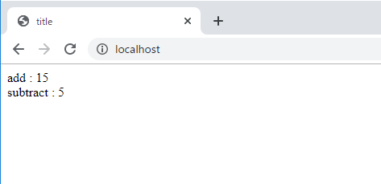
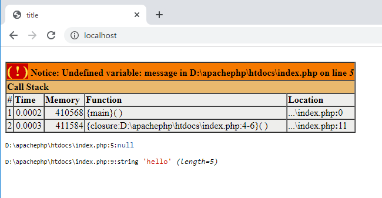

こんにちは。明月です。
今回はphpの匿名関数(ラムダ)とクロージャに関して調べてみました。
匿名関数は既存phpで宣言した「function methodname($param)」の形じゃなく、「function($param)」という関数名がないことです。関数名がないというのは一回性の関数で「javascript」とコールバック関数とにみたいな流れの関数です。
<?php
function runTest($func) {
//$funcが関数の可否をチェックする。(javascriptでtypeof 変数 === "function"と同じ意味)
if (is_callable($func)) {
// 関数を実行してパラメータの10と5を入れる。
return $func(10, 5);
}
return 0;
}
// 匿名関数でrunTest関数に関数を入れました。
$add = runTest(function ($a, $b) {
// 上のところで「10」と「5」のパラメータを渡したので「$a」、「$b」は「10」と「5」です。
// 10と５を足すと結果は15です。
return $a + $b;
});
// 匿名関数でrunTest関数に関数を入れました。
$subtract = runTest(function ($a, $b) {
// 上のところで「10」と「5」のパラメータを渡したので「$a」、「$b」は「10」と「5」です。
// 10から５を引くと結果は5です。
return $a - $b;
});
?>
<!DOCTYPE html>
<html>
<head><title>title</title></head>
<body>
<!-- $addの結果は「15」です。-->
add : <?=$add?>
<br />
<!-- $subtractの結果は「5」です。-->
subtract : <?=$subtract?>
</body>
</html>

上の例をみればrunTest関数に２つのメソッド名がないメソッドを渡します。この関数では「$add」と「$substract」に結果を渡すための一回性の関数です。
クロージャとは「java」と「C#」、「javascript」のクロージャと同じ概念です。クロージャと言うのは関数内部じゃないところで宣言した変数を関数の中で使えることです。
実際にメモリ上では別のメモリ領域なので共有ができないですが、ソース上でメモリを共有するような機能になっています。
<?php
$message = 'hello';
// lambda式(匿名関数)
$example1 = function () {
var_dump($message);
};
// lambda式(匿名関数)
// クロージャ機能を使うようには「use」で$message変数を使うと宣言する。
$example2 = function () use ($message) {
var_dump($message);
};
// 関数実行!
$example1();
$example2();
?>
<!DOCTYPE html>
<html>
<head><title>title</title></head>
<body></body>
</html>

上の例をみれば$message変数に「hello」という値を入力しました。各匿名関数「$example1」と「$example2」を作成しました。
$example1の関数では「$message」変数を参照するとエラーが発生します。エラー内容は宣言してない変数使用ということになっています。
なぜなら$messageの変数は$example1関数外で宣言したものからです。でも、$example2では$messageを使いますね。
useキーワードを利用して関数外の変数を使えるようにしたからです。
link - https://www.php.net/manual/en/functions.anonymous.php
link - https://www.php.net/closure
- [CakePHP] Errorページを設定する方法2020/02/20 03:00:00
- [CakePHP] Transactionを使う方法とEntityクラスを利用してInsert、Update、Deleteする方法2020/02/19 03:00:00
- [CakePHP] ORMのテーブルFetch設定2020/02/18 03:00:00
- [CakePHP] Cakeフレームワークでデータベースに接続する時に使うQuery式とEntityクラス、Tableクラス、ResultSet2020/02/17 08:16:23
- [CakePHP] データベース(MariaDB(Mysql))を接続する方法2020/02/14 03:00:00
- [PHP] namespaceとuse2020/02/13 03:00:00
- [CakePHP] RequestとResponseに関して2020/02/12 03:00:02
- [CakePHP] PHPのCakeからAjax要請がある時、jsonタイプ(json_encode関数)でResponseする方法とControllerでViewを選択する方法2020/02/08 03:00:00
- [CakePHP] MVCフレームワークのCakeをインストールする方法2020/02/07 03:00:02
- [PHP] 自動require及びincludeをする方法(spl_autoload_register)2020/02/05 03:00:00
- [PHP] 匿名関数(ラムダ式)とクロージャ(closure)2020/02/04 03:00:00
- [PHP] PHPのコーディング領域とデザイン領域を分離するテンプレートライブラリ Smarty2020/02/02 03:00:00
- [PHP] Reflection - Variable編2020/02/01 03:00:00
- [PHP] Reflection - Method編2020/01/31 03:00:00
- [PHP] Reflection - Class編2020/01/30 03:00:00
- [C#] NPOIライブラリを利用してエクセルファイルを生成する方法2020/05/07 01:49:01
- [C#] Geckoライブラリを利用してウェブスクレイピングする方法2020/05/05 00:52:26
- [C#] PDFを作成する方法(iTextSharp)2020/05/03 10:22:40
- [C#] シリアライズ(Serialization)をする方法2020/04/30 19:32:04
- [C#] dynamicタイプの動的パラメータ-DynamicObject(WinFormでASP.MVCのViewBagオブジェクトを使用する方法)2020/04/29 22:41:32
- [C#] Stringの補間式(interpolation)2020/04/27 20:39:57
- [C#] Newtonsoft.JSONライブラリを利用してJsonデータ構造を扱う方法2020/04/23 20:19:53
- [C#] EMailを送信する方法(System.Net.Mail)2020/04/22 19:00:42
- [C#] ini環境ファイルを使う方法2020/04/22 00:09:39
- [C#] 環境設定ファイルを扱う方法(System.Configuration)2020/04/20 19:37:57
- [C#] Reflectionを利用してクラス複製する方法2020/04/17 00:34:33
- [C#] XMLをXPathを利用してデータを取得する方法2020/04/16 00:47:17
- [C#] NSoupライブラリを利用してXMLとHTMLをパーシングする方法2020/04/14 19:34:15
- [C#] 日付フォーマット2020/04/09 20:53:20
- [C#] ログライブラリ(log4net)を設定する方法2020/04/08 13:04:22